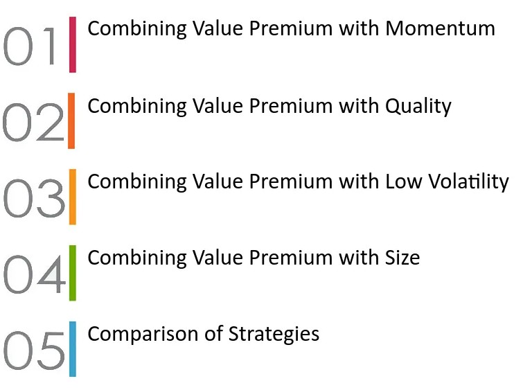
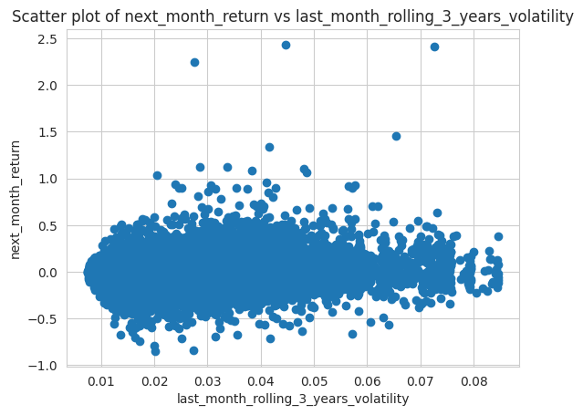
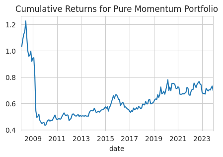
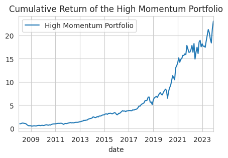
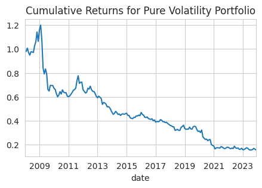
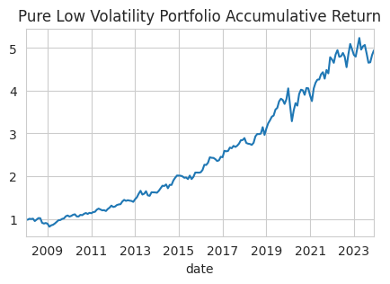
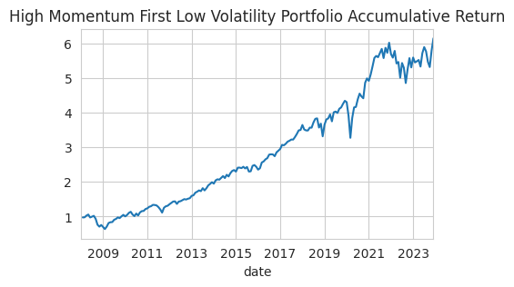
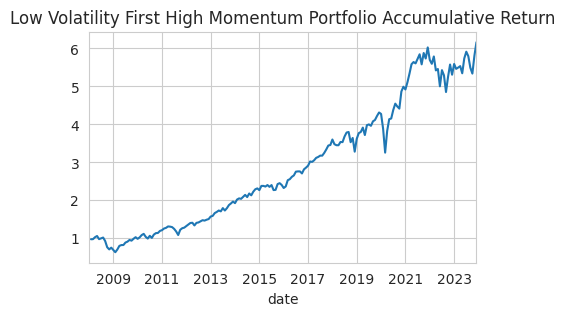
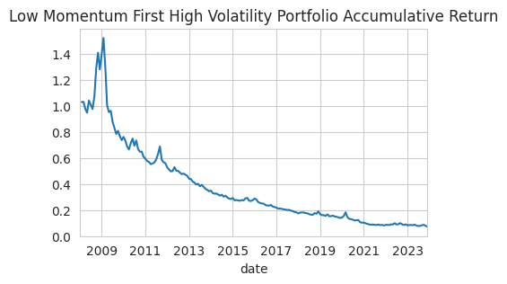
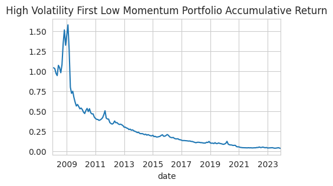

Combining Low Volatility with Momentum
May 4, 2025
Table of Contents
Strategy Details
This strategy is based on the following paper: Grobys, K., Fatmy, V., & Rajalin, T. (2024). Combining low-volatility and momentum: recent evidence from the Nordic equities. Applied Economics.
Key Concept
The strategy explores how combining the low-volatility anomaly with the momentum anomaly can enhance risk-adjusted returns. While the original research focused on Nordic stock markets, we investigate whether this combined approach can improve performance in the S&P 500 context.
Let's begin by collecting and processing the necessary data:
# Collect the list of the S&P 500 companies from Wikipedia and save it to a file
import os
import requests
import pandas as pd
import numpy as np
import warnings
warnings.filterwarnings("ignore")
# Get the list of S&P 500 companies from Wikipedia
url = 'https://en.wikipedia.org/wiki/List_of_S%26P_500_companies'
response = requests.get(url)
html = response.content
df = pd.read_html(html, header=0)[0]
tickers = df['Symbol'].tolist()
N = 20 # Number of stocks to long or short on each tail# Load the data from yahoo finance
import os
import yfinance as yf
def load_data(symbol):
direc = 'data/'
os.makedirs(direc, exist_ok=True)
file_name = os.path.join(direc, symbol + '.csv')
if not os.path.exists(file_name):
ticker = yf.Ticker(symbol)
df = ticker.history(start='2005-01-01', end='2023-12-31')
df.to_csv(file_name)
df = pd.read_csv(file_name, index_col=0)
df.index = pd.to_datetime(df.index, utc=True).tz_convert('US/Eastern')
df['date'] = df.index
if len(df) == 0:
os.remove(file_name)
return None
return df
holder = []
ticker_with_data = []
for symbol in tickers:
df = load_data(symbol)
if df is not None:
if len(df) > 3*252:
holder.append(df)
ticker_with_data.append(symbol)
tickers = ticker_with_data[:]
print(f'Loaded data for {len(tickers)} companies')Code Explanation
This code section implements efficient data management:
- Data Download Function:
- Creates a 'data' directory for caching
- Downloads historical data from Yahoo Finance
- Handles timezone conversion for consistency
- Data Processing:
- Filters out invalid or empty datasets
- Ensures sufficient historical data (3+ years)
- Maintains a clean list of valid tickers
# Get the monthly data as we use the monthly data to calculate the momentum
monthly_data = []
for data in holder:
df = data.resample('M').agg({
'date': 'first',
'Open': 'first',
'High': 'max',
'Low': 'min',
'Close': 'last',
'Volume': 'sum'
})
df.set_index('date', inplace=True)
# convert the date time to year-month
df.index = df.index.to_period('M')
monthly_data.append(df)Monthly Returns and Volatility Calculation
We calculate the monthly returns and volatilities for our analysis. The strategy assumes opening positions at the monthly open price and closing at the monthly close price.
# Add the monthly returns and the volatilties
# Calculate the monthly returns
temp = []
for df in monthly_data:
df['intra_month_return'] = df['Close'] / df['Open'] - 1
df['next_intra_month_return'] = df['intra_month_return'].shift(-1)
df['monthly_return'] = df['Close'].pct_change()
# Last 12 months return except the current month
df['rolling_12_months_return'] = df['monthly_return'].rolling(11).sum().shift(1)
df = df[df['rolling_12_months_return'].notna()]
temp.append(df)
monthly_data = temp
# Calculate the volatility using historical data of the last 3 years
for df in holder:
df['daily_return'] = df['Close'].pct_change()
df['rolling_3_years_volatility'] =df['daily_return'].rolling(3*252).std()
df['last_month_rolling_3_years_volatility'] = df['rolling_3_years_volatility'].shift()
monthly_3_years_volatility_data = []
for df in holder:
temp = df.copy()
temp = temp.resample('M').agg({'date': 'first','last_month_rolling_3_years_volatility': 'first'})
temp.set_index('date', inplace=True)
temp.dropna(inplace=True)
# Convert the date time to year-month format
temp.index = temp.index.to_period('M')
monthly_3_years_volatility_data.append(temp)
# Add the last_month_rolling_3_years_volatility to monthly data
for i in range(len(monthly_data)):
monthly_data[i] = pd.concat([monthly_data[i], monthly_3_years_volatility_data[i]], axis=1)
#The backtesting period start from 2008-01-02
monthly_data[i] = monthly_data[i].loc['2008-01-01':]
rolling_12_months_return_holder = []
next_intra_month_return_holder = []
last_month_rolling_3_years_std_holder = []
intra_month_reutrn_holder = []
# Creating tables with symbols as columns and the date as rows
for symbol, df in zip(tickers, monthly_data):
rolling_12_months_return_series = df['rolling_12_months_return'].copy()
next_intra_month_return_series = df['next_intra_month_return'].copy()
last_month_rolling_3_years_std_series = df['last_month_rolling_3_years_volatility'].copy()
rolling_12_months_return_series.name = symbol
next_intra_month_return_series.name = symbol
last_month_rolling_3_years_std_series.name = symbol
rolling_12_months_return_holder.append(rolling_12_months_return_series)
next_intra_month_return_holder.append(next_intra_month_return_series)
last_month_rolling_3_years_std_holder.append(last_month_rolling_3_years_std_series)
# Create the final dataframes
rolling_12_months_return_df = pd.concat(rolling_12_months_return_holder, axis=1, ignore_index=False)
next_intra_month_return_df = pd.concat(next_intra_month_return_holder, axis=1, ignore_index=False)
last_month_rolling_3_years_std_df = pd.concat(last_month_rolling_3_years_std_holder, axis=1, ignore_index=False)
print (rolling_12_months_return_df.iloc[:3, :4])
print (next_intra_month_return_df.iloc[:3, :4])
print (last_month_rolling_3_years_std_df.iloc[:3, :4])Code Explanation
This code section implements the core calculations for our strategy:
- Monthly Return Calculations:
- Computes intra-month returns using open and close prices
- Calculates next month's returns for forward-looking analysis
- Derives monthly returns using closing prices
- Computes 12-month rolling returns for momentum signals
- Volatility Calculations:
- Uses daily returns to calculate 3-year rolling volatility
- Shifts volatility data to avoid look-ahead bias
- Resamples volatility data to monthly frequency
- Data Organization:
- Creates separate dataframes for different metrics
- Aligns all time series for consistent analysis
- Structures data with symbols as columns and dates as rows
MMM AOS ABT ABBV
date
2008-01 0.165248 -0.037589 0.081723 NaN
2008-02 0.105294 -0.041811 0.057131 NaN
2008-03 0.065305 0.010470 -0.011287 NaN
MMM AOS ABT ABBV
date
2008-01 -0.010007 0.037006 -0.055389 NaN
2008-02 0.012667 -0.094491 0.033352 NaN
2008-03 -0.034040 -0.069337 -0.037960 NaN
MMM AOS ABT ABBV
date
2008-01 0.011269 0.021270 0.011481 NaN
2008-02 0.011350 0.021901 0.011652 NaN
2008-03 0.011437 0.022053 0.011725 NaN
Regression Analysis
We perform regression analysis to examine the relationship between volatility and future returns. This analysis helps us understand if there's a systematic relationship between a stock's volatility and its subsequent performance.
# Regression Analysis
import matplotlib.pyplot as plt
import seaborn as sns
import statsmodels.api as sm
regression_holder = []
for df in monthly_data:
regression_holder.append(df[['rolling_12_months_return','next_intra_month_return', 'last_month_rolling_3_years_volatility']].dropna())
df_for_regression = pd.concat(regression_holder, axis = 0, ignore_index=True)
plt.scatter(df_for_regression['last_month_rolling_3_years_volatility'], df_for_regression['next_intra_month_return'])
plt.xlabel('last_month_rolling_3_years_volatility')
plt.ylabel('next_month_return')
plt.title('Scatter plot of next_month_return vs last_month_rolling_3_years_volatility')
plt.show()
# Calculate the correlation between the next month return and the last month volatility
correlation = df_for_regression['next_intra_month_return'].corr(df_for_regression['last_month_rolling_3_years_volatility'])
print (f'Correlation between the next month return and the last month volatility is {correlation}')
X = sm.add_constant(df_for_regression['last_month_rolling_3_years_volatility'])
y = df_for_regression['next_intra_month_return']
model = sm.OLS(y, X).fit()
model.summary()
Correlation between the next month return and the last month volatility is 0.05542205432229919
OLS Regression Results
===================================================================================
Dep. Variable: next_intra_month_return R-squared: 0.003
Model: OLS Adj. R-squared: 0.003
Method: Least Squares F-statistic: 264.2
Date: Sat, 10 May 2025 Prob (F-statistic): 2.52e-59
Time: 14:19:32 Log-Likelihood: 82804.
No. Observations: 85761 AIC: -1.656e+05
Df Residuals: 85759 BIC: -1.656e+05
Df Model: 1
Covariance Type: nonrobust
=========================================================================================================
coef std err t P>|t| [0.025 0.975]
---------------------------------------------------------------------------------------------------------
const 0.0004 0.001 0.525 0.600 -0.001 0.002
last_month_rolling_3_years_volatility 0.5692 0.035 16.255 0.000 0.501 0.638
==============================================================================
Omnibus: 30801.899 Durbin-Watson: 2.049
Prob(Omnibus): 0.000 Jarque-Bera (JB): 1807549.848
Skew: 0.925 Prob(JB): 0.00
Kurtosis: 25.415 Cond. No. 111.
==============================================================================
Notes:
[1] Standard Errors assume that the covariance matrix of the errors is correctly specified.
Analysis of the Results
The regression analysis reveals several key findings:
- Statistical Significance:
- The p-value of the volatility coefficient is 0.000, indicating high statistical significance
- The relationship between volatility and future returns is robust
- Relationship Direction:
- Positive correlation between volatility and future returns
- This finding is somewhat counterintuitive to traditional low volatility theory
- Potential Explanations:
- Possible code implementation issues that need verification
- Low volatility effect may be weaker in S&P 500 context
- Time period differences from original research
- Effect might be more pronounced in distribution tails
Tail Analysis
To better understand the relationship, we analyze the tails of the volatility distribution:
# Numbers of stocks to long or short
low_vol_stocks = last_month_rolling_3_years_std_df.mask(last_month_rolling_3_years_std_df.rank(axis=1, method='dense', ascending=False) > N,np.nan)
high_vol_stocks = last_month_rolling_3_years_std_df.mask(last_month_rolling_3_years_std_df.rank(axis=1, method='dense', ascending=True) > N,np.nan)
low_vol_stocks_symbols = low_vol_stocks.apply(lambda row: row.dropna().index.tolist(), axis=1)
high_vol_stocks_symbols = high_vol_stocks.apply(lambda row: row.dropna().index.tolist(), axis=1)
mask = low_vol_stocks.notna() | high_vol_stocks.notna()
last_month_rolling_3_years_std_df_for_tail_regression = last_month_rolling_3_years_std_df[mask]
next_intra_month_return_df_for_tail_regression = next_intra_month_return_df[mask]
# Flatten the data
vol_holder = []
return_holder = []
for i in range(len(last_month_rolling_3_years_std_df_for_tail_regression)):
vol_holder.extend(last_month_rolling_3_years_std_df_for_tail_regression.iloc[i].values)
return_holder.extend(next_intra_month_return_df_for_tail_regression.iloc[i].values)
last_month_rolling_3_years_std_df_for_tail_regression = pd.Series(vol_holder)
next_intra_month_return_df_for_tail_regression = pd.Series(return_holder)
last_month_rolling_3_years_std_df_for_tail_regression.name = 'last_month_rolling_3_years_std'
next_intra_month_return_df_for_tail_regression.name = 'next_intra_month_return'
df_for_tail_regression = pd.concat([last_month_rolling_3_years_std_df_for_tail_regression, next_intra_month_return_df_for_tail_regression], axis=1)
df_for_tail_regression.dropna(inplace=True)
X = sm.add_constant(df_for_tail_regression['last_month_rolling_3_years_std'])
Y = df_for_tail_regression['next_intra_month_return']
model = sm.OLS(Y, X).fit()
model.summary()Tail Analysis Methodology
This code section implements a focused analysis on volatility extremes:
- Portfolio Selection:
- Identifies stocks with lowest and highest volatility
- Creates separate portfolios for extreme volatility groups
- Maintains equal number of stocks in each portfolio
- Data Processing:
- Flattens panel data for regression analysis
- Handles missing values appropriately
- Preserves the relationship between volatility and returns
- Regression Analysis:
- Implements OLS regression on tail portfolios
- Includes constant term for baseline returns
- Generates comprehensive statistical output
OLS Regression Results
===================================================================================
Dep. Variable: next_intra_month_return R-squared: 0.005
Model: OLS Adj. R-squared: 0.005
Method: Least Squares F-statistic: 35.63
Date: Sat, 10 May 2025 Prob (F-statistic): 2.49e-09
Time: 14:19:32 Log-Likelihood: 4974.0
No. Observations: 7640 AIC: -9944.
Df Residuals: 7638 BIC: -9930.
Df Model: 1
Covariance Type: nonrobust
==================================================================================================
coef std err t P>|t| [0.025 0.975]
--------------------------------------------------------------------------------------------------
const 0.0045 0.003 1.753 0.080 -0.001 0.010
last_month_rolling_3_years_std 0.4882 0.082 5.969 0.000 0.328 0.649
==============================================================================
Omnibus: 5344.885 Durbin-Watson: 1.678
Prob(Omnibus): 0.000 Jarque-Bera (JB): 487706.924
Skew: 2.584 Prob(JB): 0.00
Kurtosis: 41.799 Cond. No. 56.7
==============================================================================
Notes:
[1] Standard Errors assume that the covariance matrix of the errors is correctly specified.
Strategy Implementation on the Whole Universe of S&P500
In this section, we implement various portfolio strategies combining momentum and volatility factors. We create a comprehensive results table to compare the performance of different approaches.
Strategy Overview
We implement and compare several portfolio strategies:
- Pure Momentum Portfolio
- High Momentum Portfolio
- Pure Volatility Portfolio
- Low Volatility Portfolio
- Combined Strategies (Double Screening)
# Build a table to store the results from 4 portfolios using portfolio name as rows and metrics as columns
columns = ['Total Return', 'Annualized Return', 'Annualized Volatility', 'Sharpe Ratio', 'VaR']
index = ['Pure Momentum Portfolio','High Momentum Portfolio','Pure Volatility Portfolio', 'Low Volatility Portfolio',
'High Momentum First Low Volatility Portfolio', 'Low Volatility First High Momentum Portfolio',
'Low Momentum First High Volatility Portfolio', 'High Volatility First Low Momentum Portfolio']
results_df = pd.DataFrame(index=index, columns=columns)Pure Momentum Portfolio
The pure momentum strategy involves:
- Calculating 12-month momentum scores (excluding the most recent month)
- Taking long positions in high momentum stocks
- Taking short positions in low momentum stocks
- Monthly rebalancing based on updated momentum scores
# Select the top N and bottom N stocks based on the momentum
high_momentum_mask = rolling_12_months_return_df.rank(axis=1, method='dense', ascending=False, na_option='top') < N
low_momentum_mask = rolling_12_months_return_df.rank(axis=1, method='dense', ascending=True, na_option='top') < N
returns_df_for_pure_momentum = pd.DataFrame(index=rolling_12_months_return_df.index, columns=rolling_12_months_return_df.columns)
returns_df_for_pure_momentum.iloc[:, :] = np.nan
# Assign the returns to the pure momentum portfolio
returns_df_for_pure_momentum[high_momentum_mask] = next_intra_month_return_df[high_momentum_mask]
# As we take short position for low momentum stocks, we need to multiply by -1
returns_df_for_pure_momentum[low_momentum_mask] = -next_intra_month_return_df[low_momentum_mask]
equal_weighted_returns = returns_df_for_pure_momentum.mean(axis=1, skipna=True).shift()
print (equal_weighted_returns.tail())
# Calculate the cumulative returns
cumulative_returns = (1 + equal_weighted_returns).cumprod()
print("The accumulated return for the equal weighted portfolio is: ", cumulative_returns[-1])
# Calculate the annualized return
annualized_return = (cumulative_returns[-1])**(1/len(cumulative_returns)) - 1
print("The annualized return for the equal weighted portfolio is: ", annualized_return)
# Calculate the annualized volatility
annualized_volatility = equal_weighted_returns.std() * np.sqrt(12)
print("The annualized volatility for the equal weighted portfolio is: ", annualized_volatility)
# Calculate the Sharpe ratio
sharpe_ratio = annualized_return / annualized_volatility
print("The Sharpe ratio for the equal weighted portfolio is: ", sharpe_ratio)
# Calculate the VaR
VaR = equal_weighted_returns.quantile(0.05)
print("The VaR for the equal weighted portfolio is: ", VaR)
# Plot the cumulative returns
import matplotlib.pyplot as plt
plt.figure(figsize=(5, 3))
cumulative_returns.plot()
plt.title('Cumulative Returns for Pure Momentum Portfolio')
plt.show()
# Store the results in the results dataframe
results_df.loc['Pure Momentum Portfolio', 'Total Return'] = cumulative_returns[-1]
results_df.loc['Pure Momentum Portfolio', 'Annualized Return'] = annualized_return
results_df.loc['Pure Momentum Portfolio', 'Annualized Volatility'] = annualized_volatility
results_df.loc['Pure Momentum Portfolio', 'Sharpe Ratio'] = sharpe_ratio
results_df.loc['Pure Momentum Portfolio', 'VaR'] = VaR
Pure-play High Momentum Portfolio
This strategy focuses solely on long positions in high momentum stocks, without taking short positions.
high_momentum_mask = rolling_12_months_return_df.rank(axis=1, method='dense', ascending=False) <= N
# Get the returns for the high momentum stocks
returns_df_for_pure_high_momentum = next_intra_month_return_df [high_momentum_mask]
# Build the equal weighted portfolio for the high momentum stocks
equal_weight_portfolio_pure_high_momentum = returns_df_for_pure_high_momentum.mean(axis=1).shift()
# calculate the cumulative return
cumulative_return_high_momentum = (1 + equal_weight_portfolio_pure_high_momentum).cumprod()
print("The accumulative return of the high momentum portfolio is:", cumulative_return_high_momentum[-1])
# Calculate the annualized return
annualized_return_high_momentum = cumulative_return_high_momentum[-1] ** (12 / len(cumulative_return_high_momentum)) - 1
print("The annualized return of the high momentum portfolio is:", annualized_return_high_momentum)
# Calculate the annualized volatility
annualized_volatility_high_momentum = equal_weight_portfolio_pure_high_momentum.std() * np.sqrt(12)
print("The annualized volatility of the high momentum portfolio is:", annualized_volatility_high_momentum)
# Calculate the Sharpe ratio
sharpe_ratio_high_momentum = annualized_return_high_momentum / annualized_volatility_high_momentum
print("The Sharpe ratio of the high momentum portfolio is:", sharpe_ratio_high_momentum)
# Calculate the VaR at 95% confidence level
VaR_95_high_momentum = equal_weight_portfolio_pure_high_momentum.quantile(0.05)
print("The VaR at 95% confidence level of the high momentum portfolio is:", VaR_95_high_momentum)
# Plot the cumulative return of the high momentum portfolio
plt.figure(figsize=(5, 3))
cumulative_return_high_momentum.plot(label='High Momentum Portfolio')
plt.title('Cumulative Return of the High Momentum Portfolio')
plt.legend()
plt.show()
# Store the results in the results table
results_df.loc['High Momentum Portfolio', 'Total Return'] = cumulative_return_high_momentum[-1]
results_df.loc['High Momentum Portfolio', 'Annualized Return'] = annualized_return_high_momentum
results_df.loc['High Momentum Portfolio', 'Annualized Volatility'] = annualized_volatility_high_momentum
results_df.loc['High Momentum Portfolio', 'Sharpe Ratio'] = sharpe_ratio_high_momentum
results_df.loc['High Momentum Portfolio', 'VaR'] = VaR_95_high_momentum
Pure Volatility Portfolio
This strategy implements a pure volatility-based approach, taking short positions in high volatility stocks and long positions in low volatility stocks.
high_volatility_mask = last_month_rolling_3_years_std_df.rank(axis=1, method='dense', ascending=False) <= N
low_volatility_mask = last_month_rolling_3_years_std_df.rank(axis=1, method='dense', ascending=True) <= N
# Get the returns
returns_df_for_pure_volatility = pd.DataFrame(index=last_month_rolling_3_years_std_df.rank(axis=1, method='dense', ascending=False).index, columns=last_month_rolling_3_years_std_df.columns)
returns_df_for_pure_volatility.iloc[:, :] = np.nan
returns_df_for_pure_volatility[high_volatility_mask] = - next_intra_month_return_df[high_volatility_mask]
returns_df_for_pure_volatility[low_volatility_mask] = next_intra_month_return_df[low_volatility_mask]
# Build the equal weighted portfolio
equal_weighted_returns = returns_df_for_pure_volatility.mean(axis=1, skipna=True).shift()
# Calculate the cumulative returns
cumulative_returns = (1 + equal_weighted_returns).cumprod()
print("The accumulated return for the equal weighted portfolio is: ", cumulative_returns[-1])
# Calculate the annualized return
annualized_return = (cumulative_returns[-1])**(1/len(cumulative_returns)) - 1
print("The annualized return for the equal weighted portfolio is: ", annualized_return)
# Calculate the annualized volatility
annualized_volatility = equal_weighted_returns.std() * np.sqrt(12)
print("The annualized volatility for the equal weighted portfolio is: ", annualized_volatility)
# Calculate the Sharpe ratio
sharpe_ratio = annualized_return / annualized_volatility
print("The Sharpe ratio for the equal weighted portfolio is: ", sharpe_ratio)
# Calculate the VaR
VaR = equal_weighted_returns.quantile(0.05)
print("The VaR for the equal weighted portfolio is: ", VaR)
# Plot the cumulative returns
plt.figure(figsize=(5, 3))
cumulative_returns.plot()
plt.title('Cumulative Returns for Pure Volatility Portfolio')
plt.show()
# Store the results in the results table
results_df.loc['Pure Volatility Portfolio', 'Total Return'] = cumulative_returns[-1]
results_df.loc['Pure Volatility Portfolio', 'Annualized Return'] = annualized_return
results_df.loc['Pure Volatility Portfolio', 'Annualized Volatility'] = annualized_volatility
results_df.loc['Pure Volatility Portfolio', 'Sharpe Ratio'] = sharpe_ratio
results_df.loc['Pure Volatility Portfolio', 'VaR'] = VaR
Pure Low-Volatility Portfolio
This strategy focuses on long positions in low volatility stocks, without taking short positions.
low_volatility_mask = last_month_rolling_3_years_std_df.rank(axis=1, method='dense', ascending=True) <= N
# Get the returns for the low volatility stocks
returns_df_for_pure_volatility = pd.DataFrame(index=last_month_rolling_3_years_std_df.index, columns=last_month_rolling_3_years_std_df.columns)
returns_df_for_pure_volatility.iloc[:, :] = np.nan
returns_df_for_pure_low_volatility = next_intra_month_return_df[low_volatility_mask]
equal_weight_portfolio_pure_low_volatility = returns_df_for_pure_low_volatility.mean(axis=1).shift()
# calculate the cumulative return
cumulative_return_low_volatility = (1 + equal_weight_portfolio_pure_low_volatility).cumprod()
print("The accumulative return of the low volatility portfolio is:", cumulative_return_low_volatility[-1])
# Calculate the Sharpe ratio
sharpe_ratio = equal_weight_portfolio_pure_low_volatility.mean() / equal_weight_portfolio_pure_low_volatility.std()* np.sqrt(12)
print("The Sharpe ratio of the low volatility portfolio is:", sharpe_ratio)
# Calculate the annualized volatility
annualized_volatility = equal_weight_portfolio_pure_low_volatility.std() * np.sqrt(12)
print("The annualized volatility of the low volatility portfolio is:", annualized_volatility)
# Calculate the annualized return
annualized_return = (cumulative_return_low_volatility[-1]) ** (1/15) - 1
print("The annualized return of the low volatility portfolio is:", annualized_return)
# Calculate the VaR
VaR = equal_weight_portfolio_pure_low_volatility.quantile(0.05)
print("The VaR of the low volatility portfolio is:", VaR)
# Plot the cumulative return
plt.figure(figsize=(5, 3))
cumulative_return_low_volatility.plot(title='Pure Low Volatility Portfolio Accumulative Return')
# Store the results in the results table
results_df.loc['Low Volatility Portfolio', 'Total Return'] = cumulative_return_low_volatility[-1]
results_df.loc['Low Volatility Portfolio', 'Annualized Return'] = annualized_return
results_df.loc['Low Volatility Portfolio', 'Annualized Volatility'] = annualized_volatility
results_df.loc['Low Volatility Portfolio', 'Sharpe Ratio'] = sharpe_ratio
results_df.loc['Low Volatility Portfolio', 'VaR'] = VaR
Double Screening: Combined Strategy
We implement four combined strategies using double-screening:
- High Momentum First Low Volatility Portfolio
- Low Volatility First High Momentum Portfolio
- Low Momentum First High Volatility Portfolio
- High Volatility First Low Momentum Portfolio
1. Low-Volatility Stocks from High Momentum Universe
HighMomentumFirst_LowVolatility_df = pd.DataFrame(index = rolling_12_months_return_df.index, columns=rolling_12_months_return_df.columns)
HighMomentumFirst_LowVolatility_df.iloc[:, :] = np.nan
# Copy the rolling 12 months return dataframe to avoid changing the original dataframe
last_month_rolling_3_years_std_df_copy = last_month_rolling_3_years_std_df.copy()
# Firstly selecte the high momentum stocks
N_high_momentum = N * 2
high_momentum_mask = rolling_12_months_return_df.rank(axis=1, method='dense', ascending=True) > N_high_momentum
HighMomentumFirst_LowVolatility_df[high_momentum_mask] = 1
# Set the low momentum stocks in the dataframe of volatility to be nan so that we will only select stocks of low volatility from the high momentum stocks
last_month_rolling_3_years_std_df_copy[~high_momentum_mask] = np.nan
# Select the low volatility stocks from the high momentum stocks
# Set the number of low volatility stocks to be half of the high momentum stocks number
N_low_volatility = N * 2
low_volatility_mask = last_month_rolling_3_years_std_df_copy.rank(axis=1, method='dense', ascending=False) > N_low_volatility
# Denote the low volatility stocks to be 1 and the high volatility stocks to be nan
HighMomentumFirst_LowVolatility_df[low_volatility_mask] = 1
HighMomentumFirst_LowVolatility_df[~low_volatility_mask] = np.nan
# Get the returns
returns_df_for_high_momentumFirst_low_volatility = pd.DataFrame(index=rolling_12_months_return_df.index, columns=rolling_12_months_return_df.columns)
returns_df_for_high_momentumFirst_low_volatility.iloc[:, :] = np.nan
# Perform element-wise multiplication to get the returns of the low volatility first high momentum portfolio
returns_df_for_high_momentumFirst_low_volatility = next_intra_month_return_df*HighMomentumFirst_LowVolatility_df
# Get the equal weighted portfolio
equal_weight_portfolio_high_momentumFirst_low_volatility = returns_df_for_high_momentumFirst_low_volatility.mean(axis=1, skipna=True).shift()
print(equal_weight_portfolio_high_momentumFirst_low_volatility.tail(5))
# Calculate the cumulative return
cumulative_return = (1 + equal_weight_portfolio_high_momentumFirst_low_volatility).cumprod()
print("Total return of the high momentum first low volatility portfolio is:", cumulative_return[-1])
# Calculate the annualized return
annualized_return = (cumulative_return[-1]) ** (1/15) - 1
print("The annualized return of the high momentum first low volatility portfolio is:", annualized_return)
# Calculate the annualized volatility
annualized_volatility = equal_weight_portfolio_high_momentumFirst_low_volatility.std() * np.sqrt(12)
print("The annualized volatility of the high momentum first low volatility portfolio is:", annualized_volatility)
# Cacluate the Sharpe ratio
sharpe_ratio = equal_weight_portfolio_high_momentumFirst_low_volatility.mean() / equal_weight_portfolio_high_momentumFirst_low_volatility.std() * np.sqrt(12)
print("The Sharpe ratio of the high momentum first low volatility portfolio is:", sharpe_ratio)
# Calculate the VaR
VaR = equal_weight_portfolio_high_momentumFirst_low_volatility.quantile(0.05)
print("The VaR of the high momentum first low volatility portfolio is:", VaR)
# Plot the cumulative return
plt.figure(figsize=(5, 3))
cumulative_return.plot(title='High Momentum First Low Volatility Portfolio Accumulative Return')
# Store the results in the results table
results_df.loc['High Momentum First Low Volatility Portfolio', 'Total Return'] = cumulative_return[-1]
results_df.loc['High Momentum First Low Volatility Portfolio', 'Annualized Return'] = annualized_return
results_df.loc['High Momentum First Low Volatility Portfolio', 'Annualized Volatility'] = annualized_volatility
results_df.loc['High Momentum First Low Volatility Portfolio', 'Sharpe Ratio'] = sharpe_ratio
results_df.loc['High Momentum First Low Volatility Portfolio', 'VaR'] = VaR
2. High Momentum Stock from Low Volatility Universe
# Firstly selecte the low volatility stocks
LowVolatilityFirst_HighMomentum_df = pd.DataFrame(index = rolling_12_months_return_df.index, columns=rolling_12_months_return_df.columns)
LowVolatilityFirst_HighMomentum_df.iloc[:, :] = np.nan
# Copy the rolling 12 months return dataframe to avoid changing the original dataframe
rolling_12_months_return_df_copy = rolling_12_months_return_df.copy()
N_low_volatility = N * 2
low_volatility_mask =last_month_rolling_3_years_std_df.rank(axis=1, method='dense', ascending=False) > N_low_volatility
LowVolatilityFirst_HighMomentum_df[low_volatility_mask] = 1
# Set the high volatility stocks to be nan so that we will only select stocks of high momentum from the low volatility stocks
rolling_12_months_return_df_copy[~low_volatility_mask] = np.nan
N_high_momentum = N * 2
# only select the high momentum stocks from the low volatility stocks
high_momentum_mask = rolling_12_months_return_df_copy.rank(axis=1, method='dense', ascending=True) > N_high_momentum
LowVolatilityFirst_HighMomentum_df[high_momentum_mask] = 1
LowVolatilityFirst_HighMomentum_df[~high_momentum_mask] = np.nan
# Get the returns
returns_df_for_low_volatilityFirst_high_momentum = pd.DataFrame(index=rolling_12_months_return_df.index, columns=rolling_12_months_return_df.columns)
returns_df_for_low_volatilityFirst_high_momentum.iloc[:, :] = np.nan
# Perform element-wise multiplication to get the returns of the low volatility first high momentum portfolio
returns_df_for_low_volatilityFirst_high_momentum = next_intra_month_return_df*LowVolatilityFirst_HighMomentum_df
# Get the equal weighted portfolio
equal_weight_portfolio_low_volatilityFirst_high_momentum = returns_df_for_low_volatilityFirst_high_momentum.mean(axis=1, skipna=True).shift()
print(equal_weight_portfolio_low_volatilityFirst_high_momentum.tail(5))
# Calculate the cumulative return
cumulative_return = (1 + equal_weight_portfolio_low_volatilityFirst_high_momentum).cumprod()
print("Total return of the low volatility first high momentum portfolio is:", cumulative_return[-1])
# Calculate the annualized return
annualized_return = (cumulative_return[-1]) ** (1/15) - 1
print("The annualized return of the low volatility first high momentum portfolio is:", annualized_return)
# Calculate the annualized volatility
annualized_volatility = equal_weight_portfolio_low_volatilityFirst_high_momentum.std() * np.sqrt(12)
print("The annualized volatility of the low volatility first high momentum portfolio is:", annualized_volatility)
# Cacluate the Sharpe ratio
sharpe_ratio = equal_weight_portfolio_low_volatilityFirst_high_momentum.mean() / equal_weight_portfolio_low_volatilityFirst_high_momentum.std() * np.sqrt(12)
print("The Sharpe ratio of the low volatility first high momentum portfolio is:", sharpe_ratio)
# Calculate the VaR
VaR = equal_weight_portfolio_low_volatilityFirst_high_momentum.quantile(0.05)
print("The VaR of the low volatility first high momentum portfolio is:", VaR)
# Plot the cumulative return
plt.figure(figsize=(5, 3))
cumulative_return.plot(title='Low Volatility First High Momentum Portfolio Accumulative Return')
# Store the results in the results table
results_df.loc['Low Volatility First High Momentum Portfolio', 'Total Return'] = cumulative_return[-1]
results_df.loc['Low Volatility First High Momentum Portfolio', 'Annualized Return'] = annualized_return
results_df.loc['Low Volatility First High Momentum Portfolio', 'Annualized Volatility'] = annualized_volatility
results_df.loc['Low Volatility First High Momentum Portfolio', 'Sharpe Ratio'] = sharpe_ratio
results_df.loc['Low Volatility First High Momentum Portfolio', 'VaR'] = VaR
3. High Volatility from Low Momentum Universe
# Firstly selecte the low momentum stocks
LowMomentumFirst_HighVolatility_df = pd.DataFrame(index=rolling_12_months_return_df.index, columns=rolling_12_months_return_df.columns)
LowMomentumFirst_HighVolatility_df.iloc[:,:] = np.nan
# Copy the last_month_rolling_3_years_std dataframe to avoid changing the original dataframe
last_month_rolling_3_years_std_df_copy = last_month_rolling_3_years_std_df.copy()
# Firstly selecte the low momentum stocks
N_low_momentum = N * 2
low_momentum_mask = rolling_12_months_return_df.rank(axis=1, method='dense', ascending=False) > N_low_momentum
LowMomentumFirst_HighVolatility_df[low_momentum_mask] = -1
# Set the high momentum stocks to be nan so that we will only select stocks of high volatility from the low momentum stocks
last_month_rolling_3_years_std_df_copy[~low_momentum_mask] = np.nan
# Select the high volatility stocks from the low momentum stocks
# Set the number of high volatility stocks to be half of the low momentum stocks number
N_high_volatility = N * 2
high_volatility_mask = last_month_rolling_3_years_std_df_copy.rank(axis=1, method='dense', ascending=True) > N_high_volatility
# Denote the high volatility stocks to be -1 and the low volatility stocks to be nan
LowMomentumFirst_HighVolatility_df[high_volatility_mask] = -1
LowMomentumFirst_HighVolatility_df[~high_volatility_mask] = np.nan
# Get the returns
returns_df_for_low_momentumFirst_high_volatility = pd.DataFrame(index=rolling_12_months_return_df.index, columns=rolling_12_months_return_df.columns)
returns_df_for_low_momentumFirst_high_volatility.iloc[:, :] = np.nan
# Perform element-wise multiplication to get the returns of the low momentum first high volatility portfolio
returns_df_for_low_momentumFirst_high_volatility = next_intra_month_return_df*LowMomentumFirst_HighVolatility_df
# Get the equal weighted portfolio
equal_weight_portfolio_low_momentumFirst_high_volatility = returns_df_for_low_momentumFirst_high_volatility.mean(axis=1, skipna=True).shift()
print(equal_weight_portfolio_low_momentumFirst_high_volatility.tail(5))
# Calculate the cumulative return
cumulative_return = (1 + equal_weight_portfolio_low_momentumFirst_high_volatility).cumprod()
print("Total return of the low momentum first high volatility portfolio is:", cumulative_return[-1])
# Calculate the annualized return
annualized_return = (cumulative_return[-1]) ** (1/15) - 1
print("The annualized return of the low momentum first high volatility portfolio is:", annualized_return)
# Calculate the annualized volatility
annualized_volatility = equal_weight_portfolio_low_momentumFirst_high_volatility.std() * np.sqrt(12)
print("The annualized volatility of the low momentum first high volatility portfolio is:", annualized_volatility)
# Cacluate the Sharpe ratio
sharpe_ratio = equal_weight_portfolio_low_momentumFirst_high_volatility.mean() / equal_weight_portfolio_low_momentumFirst_high_volatility.std() * np.sqrt(12)
print("The Sharpe ratio of the low momentum first high volatility portfolio is:", sharpe_ratio)
# Calculate the VaR
VaR = equal_weight_portfolio_low_momentumFirst_high_volatility.quantile(0.05)
print("The VaR of the low momentum first high volatility portfolio is:", VaR)
# Plot the cumulative return
plt.figure(figsize=(5, 3))
cumulative_return.plot(title='Low Momentum First High Volatility Portfolio Accumulative Return')
# Store the results in the results table
results_df.loc['Low Momentum First High Volatility Portfolio', 'Total Return'] = cumulative_return[-1]
results_df.loc['Low Momentum First High Volatility Portfolio', 'Annualized Return'] = annualized_return
results_df.loc['Low Momentum First High Volatility Portfolio', 'Annualized Volatility'] = annualized_volatility
results_df.loc['Low Momentum First High Volatility Portfolio', 'Sharpe Ratio'] = sharpe_ratio
results_df.loc['Low Momentum First High Volatility Portfolio', 'VaR'] = VaR
4. Low Momentum from High Volatility Universe
# Firstly selecte the high volatility stocks
HighVolatilityFirst_LowMomentum_df = pd.DataFrame(index=rolling_12_months_return_df.index, columns=rolling_12_months_return_df.columns)
HighVolatilityFirst_LowMomentum_df.iloc[:,:] = np.nan
# Copy the rolling 12 months return dataframe to avoid changing the original dataframe
rolling_12_months_return_df_copy = rolling_12_months_return_df.copy()
# Firstly selecte the high volatility stocks
N_high_volatility = len(tickers) // 2
high_volatility_mask = last_month_rolling_3_years_std_df.rank(axis=1, method='dense', ascending=False) <= N_high_volatility
HighVolatilityFirst_LowMomentum_df[high_volatility_mask] = -1
# Set the low volatility stocks to be nan so that we will only select stocks of low momentum from the high volatility stocks
rolling_12_months_return_df_copy[~high_volatility_mask] = np.nan
# Select the low momentum stocks from the high volatility stocks
# Set the number of low momentum stocks to be half of the high volatility stocks number
N_low_momentum = N_high_volatility // 2
low_momentum_mask = rolling_12_months_return_df_copy.rank(axis=1, method='dense', ascending=True) <= N_low_momentum
# Denote the low momentum stocks to be 1 and the high momentum stocks to be nan
HighVolatilityFirst_LowMomentum_df[low_momentum_mask] = -1
HighVolatilityFirst_LowMomentum_df[~low_momentum_mask] = np.nan
# Get the returns
returns_df_for_high_volatilityFirst_low_momentum = pd.DataFrame(index=rolling_12_months_return_df.index, columns=rolling_12_months_return_df.columns)
returns_df_for_high_volatilityFirst_low_momentum.iloc[:, :] = np.nan
# Perform element-wise multiplication to get the returns of the high volatility first low momentum portfolio
returns_df_for_high_volatilityFirst_low_momentum = next_intra_month_return_df*HighVolatilityFirst_LowMomentum_df
# Get the equal weighted portfolio
equal_weight_portfolio_high_volatilityFirst_low_momentum = returns_df_for_high_volatilityFirst_low_momentum.mean(axis=1, skipna=True).shift()
print(equal_weight_portfolio_high_volatilityFirst_low_momentum.tail(5))
# Calculate the cumulative return
cumulative_return = (1 + equal_weight_portfolio_high_volatilityFirst_low_momentum).cumprod()
print("Total return of the high volatility first low momentum portfolio is:", cumulative_return[-1])
# Calculate the annualized return
annualized_return = (cumulative_return[-1]) ** (1/15) - 1
print("The annualized return of the high volatility first low momentum portfolio is:", annualized_return)
# Calculate the annualized volatility
annualized_volatility = equal_weight_portfolio_high_volatilityFirst_low_momentum.std() * np.sqrt(12)
print("The annualized volatility of the high volatility first low momentum portfolio is:", annualized_volatility)
# Cacluate the Sharpe ratio
sharpe_ratio = equal_weight_portfolio_high_volatilityFirst_low_momentum.mean() / equal_weight_portfolio_high_volatilityFirst_low_momentum.std() * np.sqrt(12)
print("The Sharpe ratio of the high volatility first low momentum portfolio is:", sharpe_ratio)
# Calculate the VaR
VaR = equal_weight_portfolio_high_volatilityFirst_low_momentum.quantile(0.05)
print("The VaR of the high volatility first low momentum portfolio is:", VaR)
# Store the results in the results table
results_df.loc['High Volatility First Low Momentum Portfolio', 'Total Return'] = cumulative_return[-1]
results_df.loc['High Volatility First Low Momentum Portfolio', 'Annualized Return'] = annualized_return
results_df.loc['High Volatility First Low Momentum Portfolio', 'Annualized Volatility'] = annualized_volatility
results_df.loc['High Volatility First Low Momentum Portfolio', 'Sharpe Ratio'] = sharpe_ratio
results_df.loc['High Volatility First Low Momentum Portfolio', 'VaR'] = VaR
# Plot the cumulative return
plt.figure(figsize=(5, 3))
cumulative_return.plot(title='High Volatility First Low Momentum Portfolio Accumulative Return')
Results Analysis
The table below summarizes the performance metrics for all implemented strategies:
| Portfolio | Total Return | Annualized Return | Annualized Volatility | Sharpe Ratio | VaR |
|---|---|---|---|---|---|
| Pure Momentum Portfolio | 0.697436 | -0.001875 | 0.150014 | -0.012499 | -0.073744 |
| High Momentum Portfolio | 23.098753 | 0.216814 | 0.247352 | 0.876542 | -0.098544 |
| Pure Volatility Portfolio | 0.155883 | -0.009634 | 0.162083 | -0.059437 | -0.079177 |
| Low Volatility Portfolio | 4.945701 | 0.112453 | 0.114659 | 0.936954 | -0.049847 |
| High Momentum First Low Volatility Portfolio | 6.140235 | 0.128615 | 0.166954 | 0.769989 | -0.075427 |
| Low Volatility First High Momentum Portfolio | 6.164702 | 0.128914 | 0.166628 | 0.772666 | -0.077535 |
| Low Momentum First High Volatility Portfolio | 0.072133 | -0.16078 | 0.193667 | -0.749106 | -0.088737 |
| High Volatility First Low Momentum Portfolio | 0.035425 | -0.199637 | 0.253409 | -0.687743 | -0.118319 |
Key Findings
- The Low Volatility First High Momentum Portfolio shows the best overall performance, with high returns, good Sharpe ratio, and relatively lower risk.
- Both combined portfolios (High Momentum First Low Volatility and Low Volatility First High Momentum) show higher Sharpe ratios compared to the pure high momentum portfolio.
- The Low Volatility First High Momentum Portfolio has higher total returns and lower VaR compared to the pure high momentum portfolio.
- Strategies involving short positions (Pure Momentum Portfolio and Low Momentum First High Volatility Portfolio) show unsatisfactory results.
Important Note
The high Sharpe ratios observed in these results may be influenced by survivorship bias in the S&P 500 universe. This means the results should be interpreted with caution, as they may not fully reflect real-world trading conditions.